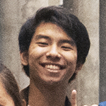
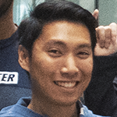

The SCRC Team
Members & Roles

-

Gaurav Ganthapodi • Conference Chair Led and organized the SCRC planning team
-

Michael Tang • Marketing Lead Communicated and organized with company representatives and creating workshop topics for SCRC
-
Nhan Le • Public Relations Communicated and organized with company representative and creating keynote speaker topics for keynote speakers
-

Chris Nguyen • Finance Lead Helped finance and budget SCRC funds for conference
-

Christopher Kim • Web Development Lead Created, designed, and maintained the SCRC website.
-
Susanth Kakarla • Operations Committee Planned with volunteering organizations to raise money to charity, helped with organizing catering
-

Justine Batongmalaki • Operations Committee Help organize volunteers, create registration forms, organize social for SCRC
-

Crystal Le • Media Committee Created flyers and designs for merchandise
-

Nathan Lara • Media Committee Created flyers and SCRC brochure
-

Emmanuel Nguyen • Visual Arts Commitee Created and Edited SCRC video
-

Vy Tran • Visual Arts Committee Assisted in filming SCRC video and printing designs on merchandise